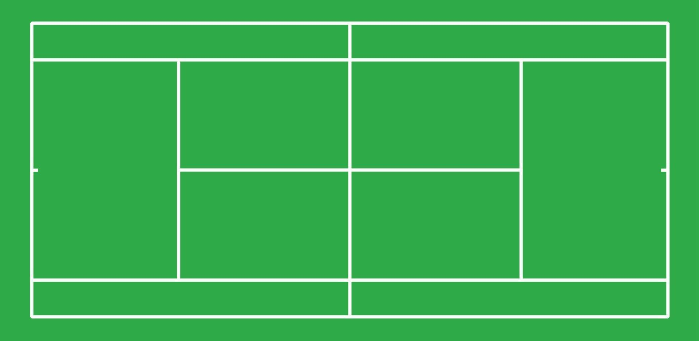

Club de Tennis les Guilleries

El club de Tenis de les Guilleries, està format i fundat per els
veins de la zona. Aquest club de tennis te una antiguitat de 10
anys. La iniciativa de formar el club, va ser una dia de les
noïes de la zona. Les activitats que es realitzen, estan
destinades per totes les families.